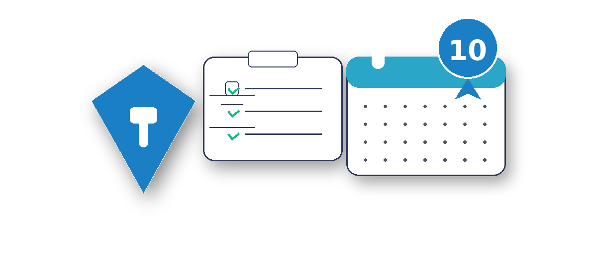
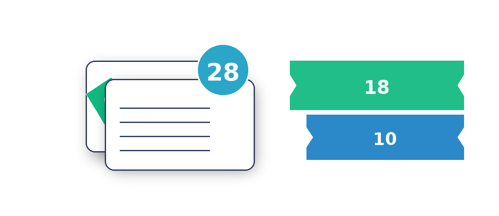

サポート内容
通常は3ヶ月しか受給できない失業手当を、社会保険（傷病手当）を活用して
最⼤28ヶ月 延⻑
するサポートをいたします。
※ 45歳以上は最⼤30ヶ月
通常
当社サポート
おすすめ
最⼤10 ヶ月
失業手当延長枠 （45歳以上は12ヶ月）
＋
最⼤18 ヶ月
傷病手当受給
合計 最⼤28ヶ月
当サポートが選ばれる理由
全国対応＆オンライン完結
専門スタッフの丁寧な対応
必要時の受診案内（診断は医師の独立判断）
初回相談は完全無料
各手当の申請条件
＋ 傷病手当
- 現職に就業している状態であること
- 社会保険の加入歴が 過去12ヶ月以上 あること
- 有給（または欠勤）で退職日含む 4日間 をお休みできること
- 受給条件を満たす 診断書 があること
※ 受給期間中に雇用契約を結ぶ仕事はNG
失業手当延長枠
- 過去24か月以内に 12ヶ月以上 の勤務歴および雇用保険加入歴があること
- 受給条件を満たす 診断書 があること
- 申請日～7日後の待期期間終了後までに 就職や開業をしない こと
サポートプラン概要
10ヶ月サポート
失業保険のみで受給
- 最大 10ヶ月間 受給可能
- 総支給額の 50%〜80%
- 待期期間7日＋給付制限（自己都合：約1ヶ月）

28ヶ月サポート
社会保険制度＋失業保険
- 最大 28ヶ月間 受給可能
- 社会保険制度で 18ヶ月延長
- 失業保険でさらに 10ヶ月

失業手当について
雇用保険制度に基づき、会社を退職して転職活動を行う際に受給できる手当です。
- 離職票が届き、提出後 約1ヶ月間の給付制限期間を経て受給開始
- 自己都合退職の場合は、約1ヶ月＋待期期間7日間後に受給開始
費用プラン（28ヶ月サポート）
PLAN 着手金＋成功報酬
60万円（税別）
- 5.5万円 × 12回 支払いとなります。
- サポート前に 着手金5.5万円 をお支払い。
- お支払いはクレジットカード対応可。
PLAN カード一括支払い
50万円（税別）※10万円割引
- 一括決済後、カード会社で分割設定も可能です。
- 手数料・規約はご利用のカード会社へご確認ください。
PLAN 振込一括支払い
※表示金額は税別。内容・条件により変動する場合があります。
費用プラン（10ヶ月サポート）
PLAN 着手金＋成功報酬
30万円（税別）
- 5.5万円 × 6回 支払いとなります。
- サポート前に 着手金5.5万円 をお支払い。
- お支払いはクレジットカード対応可。
PLAN カード一括支払い
20万円（税別）※10万円割引
- 一括決済後、カード会社で分割設定も可能です。
- 手数料・規約はご利用のカード会社へご確認ください。
PLAN 振込一括支払い
※表示金額は税別。45歳以上の延長条件や割引は要件により異なります。
ご利用者様の受給事例（総支給額30万円の場合）
※ 金額はモデルケースの目安です。実際の受給額・期間は、離職時の年齢・賃金・就職時期・制度改定等により変動します。
万が一の時も 全額返金保証 付きで安心！
専任のコンサルタントに従って申請したにもかかわらず、給付金が増えなかった場合は、全額をご返金いたします。
当社コンサルタントのサポートで申請が通らなかった場合でも、安心してお任せいただけるよう 全額返金を保証 しております。
※当社のご案内通りに行動いただいた場合に限ります。
現在うつ状態の人のうち、約3人に1人は通院していません。
国内のうつ状態の人は約300万人、実際に通院している人（うつ病・気分障害）は約100万人といわれています。
最近疲れやすい…
受診はハードルが高い
我慢すれば大丈夫かな？
参考データ
- 厚生労働省「令和2年 国民生活基礎調査」などをベースに推計
- 生涯でうつ病を経験する人：約7%（およそ15人に1人）
- 現在進行形でうつ状態にある人：約300万人前後
- 実際に通院している人（うつ病・気分障害）：約100万人
悪化する前に、まずは ご相談だけでもOKです。
通いやすいクリニックのご紹介など、
お一人おひとりに合った方法を丁寧にご提案します。
LINEで無料相談
※ ご相談は無料・匿名でもOK。 まずはお話を伺います。